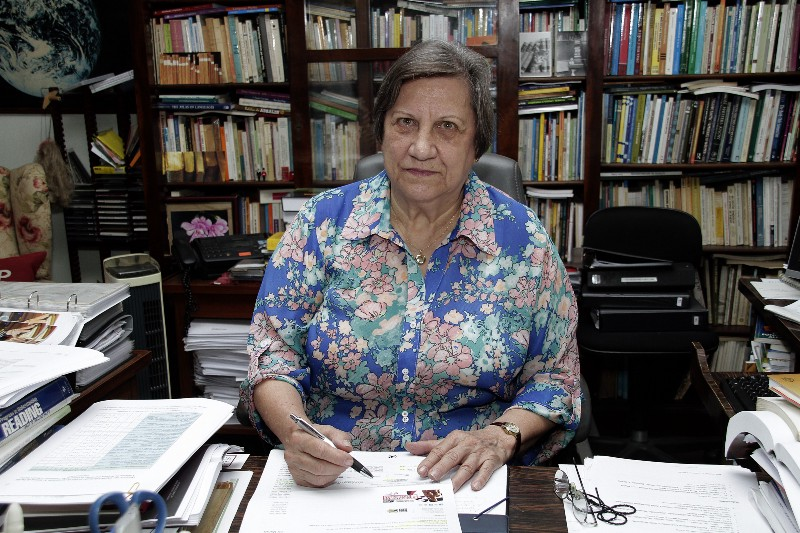
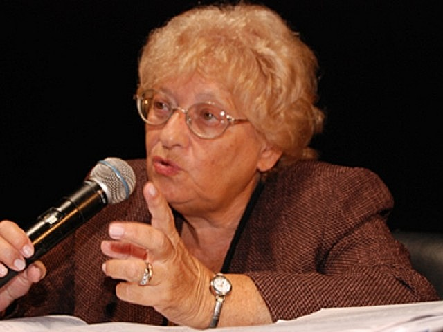

"UNA DISCIPLINA EN BUSCA DE SU IDENTIDAD" - Magda Becker Soares

¿Qué estudia la Didáctica, según Magda?
Magda Becker Soares, de la Universidad Federal de Minas Gerais, dice que la Didáctica está pasando por una
"crisis de identidad". O sea, no sabe bien qué debería estudiar. Tradicionalmente se enfoca en el proceso de
enseñanza-aprendizaje que pasa dentro del aula, y ella propone que mejor sería que la Didáctica estudie el
aula tal como es en realidad.
La crisis aparece porque la Didáctica siempre fue muy normativa: desde Comenio y su "Didáctica Magna" nos dio
reglas y consejos para enseñar. Pero otras disciplinas como la Psicología o la Lingüística lograron ser
ciencias independientes porque definieron bien su objeto de estudio. La Didáctica, en cambio, sigue pegada a
recetas y procedimientos.
¿Cómo nació la Didáctica?
La Didáctica se creó al revés de lo normal. Otras disciplinas primero investigaron la realidad, reflexionaron
sobre la práctica, y después sacaron principios y normas. La Didáctica arrancó directamente con normas y
principios, sin antes analizar a fondo lo que pasa en el aula.
O sea, la Didáctica empezó por donde las otras terminan: nunca logró autonomía porque en lugar de investigar,
se dedicó a decirle al profesores qué hacer. Por eso hoy es solo una disciplina que prescribe, que dice "hacé
esto", en vez de analizar la práctica real.
El problema de fondo es su historia rara. Para cambiarla, no basta con agregar análisis social o político
(eso sería meterse en terreno de la Sociología). Hay que empezar por reflexionar sobre su propia historia y
desde ahí reorientarla.
¿Cuál debería ser el objeto de estudio de la Didáctica?
Tradicionalmente se dice que la Didáctica estudia el "proceso de enseñanza-aprendizaje". Pero Magda Soares
tiene varias críticas:
Esto es lo que ella cuestiona:
- Decir "enseñanza-aprendizaje" da a entender que si alguien enseña, el otro siempre aprende. Y no es así.
En realidad, enseñar y aprender son dos cosas diferentes. El objeto debería ser más la enseñanza que el
aprendizaje.
- No se puede estudiar la enseñanza sin mirar el contenido específico (lengua, matemática, historia...).
Cada materia tiene su onda. La idea de que la Didáctica sirve "para todo y para todos" (desde Comenio) hace
que, al final, no le sirva mucho a los profesores.
- La Didáctica no produce investigación propia. Toma prestado conocimiento de otras ciencias (sobre todo de
la Psicología). Solo se queda en recomendar normas y pasos.
- Su objeto es súper amplio (porque el aprendizaje también lo estudia la Psicología) y a la vez muy
chiquito (reduce todo a solo enseñar-aprender).
- Propuesta final: la Didáctica debería ser la ciencia que estudie el aula tal como es, con todo lo que pasa
ahí. El aula es un fenómeno bastante acotado como para estudiarlo bien, pero lo suficientemente amplio para
no dejar afuera nada importante de la educación formal.
¿Qué pasa realmente en el aula?
Según Magda, en el aula pasan muchas cosas que la Didáctica tradicional ignora. Lo que parece más obvio
(planificar, poner objetivos, elegir métodos, evaluar) es lo menos importante. Hay otros factores que
condicionan, dirigen y determinan la enseñanza y el aprendizaje, y muchas veces tapan lo demás.
Tanto la Didáctica tradicional (la que da recetas) como las críticas que le hacen parten de una visión muy
simple del aula: un profesor que enseña y un alumno que aprende. Las críticas denuncian intereses históricos
(como la hegemonía burguesa) y dicen que no es neutral, pero no proponen una nueva Didáctica. Últimamente se
quiere recuperar la "competencia técnica", pero eso puede ser un "tecnicismo pedagógico disfrazado" (Paolo
Nosella).
Así que las alternativas han sido solo "la receta o la denuncia" (María Umbelina Caiafa Salgado). Falta
describir lo que realmente sucede. Solo cuando describamos la práctica pedagógica tal como es en el aula
podremos construir una nueva Didáctica.
Esa descripción (investigaciones desde los años 70 de sociólogos, psicólogos sociales, lingüistas,
antropólogos) estudia la "ecología del aula", la interacción simbólica, el lenguaje verbal y no verbal.
Algunos de esos elementos que pasan en el aula, más allá de la "competencia técnica", son:
- Cómo se da la interacción simbólica entre profesor y alumno.
- La influencia de la historia de la escuela, dónde está ubicada, cómo es el edificio y el aula.
- Las ideas que profesores y alumnos tienen sobre el saber y el poder.
- Las formas de control que el profesor ejerce sobre el conocimiento y sobre el alumno (eso es una forma
concreta de control social).
- Cómo el profesor construye una imagen social del aula y de los alumnos, y ellos una imagen del profesor
(como los estereotipos, el efecto halo, las profecías autocumplidas).
- Cómo el profesor usa su privacidad y autonomía en el aula, y cómo maneja las decisiones urgentes del "aquí
y ahora".
En esta forma de verlo, el contenido de la Didáctica no sería el proceso de enseñanza-aprendizaje, sino todo
el conocimiento que se produce al estudiar el aula (autores como Eggleston, Flanders, Delamont, Hargreaves,
Postic, Rosenthal & Jacobson, Stubbs, Bourdieu, Bernstein, Halliday, etc.).
Las Didácticas Específicas (o Prácticas de la Enseñanza) sí pueden estudiar el proceso de
enseñanza-aprendizaje de una materia concreta, y pueden dar recetas útiles para esa materia (por ejemplo, cómo
enseñar Portugués usando Lingüística, Psicolingüística, etc.). Pero en la idea que propone Magda, las
Prácticas de la Enseñanza se encargan de aplicar las teorías, mientras que la Didáctica General aporta la
mirada de los elementos que van más allá del contenido específico y que son la esencia del fenómeno "aula".

¿Por qué y para qué sirve la Didáctica?
Este texto defiende que la Didáctica es necesaria, siempre que se construya de cierta manera. Para explicarlo,
la autora plantea ocho supuestos falsos; si alguien creyera esos supuestos, pensaría que la Didáctica no
sirve.
Pero después los rebate uno por uno.
Supuestos que harían innecesaria la Didáctica (y por qué están mal):
- Si cualquier forma de influir sobre las personas (incluso el adoctrinamiento) fuera válida, sin importar
la libertad del alumno.
Pero no lo es, hay límites éticos.
- Si todos los métodos de enseñanza fueran igual de buenos y efectivos.
Pero no, algunos funcionan mejor que otros.
- Si los contenidos se debieran enseñar con la misma lógica que tienen en las disciplinas académicas.
No, hay que adaptarlos.
- Si las decisiones curriculares ya estuvieran resueltas y no hubiera que revisarlas.
El currículum siempre se puede mejorar.
- Si la desigualdad de aprendizajes (que solo algunos lleguen lejos) fuera deseable o imposible de cambiar.
No, todos pueden aprender más.
- Si las aptitudes de los alumnos fueran un límite natural e inamovible, que determina quién puede aprender.
La educación puede superar esos límites.
- Si alcanzara con aplicar reglas de evaluación para resolver todos los problemas.
La evaluación es más compleja.
- Si enseñar fuera fácil, dependiera solo del talento o la intuición, y no se pudiera mejorar.
Enseñar se puede aprender y mejorar.
Entonces, la Didáctica sirve porque:
- Siempre se puede enseñar mejor.
- Hay que revisar los currículos todo el tiempo.
- Hay que elegir y crear estrategias de enseñanza y evaluación.
- Tenemos el compromiso de que todos los alumnos aprendan lo indispensable.
- Hay que juntar aportes de distintas disciplinas e investigar sobre la enseñanza.
- Enseñar requiere reflexión constante.
Definición y tareas de la didáctica:
La didáctica es una disciplina teórica que estudia las prácticas de enseñanza. Describe, explica, fundamenta y
propone normas para resolver problemas pedagógicos. No es neutral: se compromete con prácticas sociales
orientadas a diseñar, implementar y evaluar programas, situaciones didácticas, materiales, estrategias,
ambientes de aprendizaje, evaluaciones y la calidad educativa.
Responde preguntas clave como: ¿para qué educamos?, ¿cómo lograrlo?, ¿qué, cuándo y cómo enseñar?, ¿cómo
enseñar a todos con buenos resultados?, ¿cómo diseñar secuencias y materiales? Todo esto es responsabilidad de
la didáctica.
DIDÁCTICA GENERAL Y DIDÁCTICAS ESPECÍFICAS
-
Didáctica general: se ocupa de problemas de enseñanza en cualquier materia, nivel
educativo, edad o tipo de
institución. Busca principios que sirvan para todos.
- Didácticas específicas: desarrollan conocimiento para áreas particulares de la enseñanza
(por ejemplo,
didáctica de la matemática, de la lengua, etc.).
¿Cómo se clasifican las didácticas específicas?
- Por niveles educativos
(inicial, primario, secundario, superior, universitario).
- Por edades de los alumnos
(niños, adolescentes, adultos, adultos mayores).
- Por disciplinas
(Matemática, Lengua, Ciencias Sociales, etc.).
- Por tipo de institución
(educación formal o no formal, rural/urbana, capacitación laboral, recreativa).
- Por características de los alumnos
(inmigrantes, minorías culturales, necesidades especiales, etc.)
Relación entre didáctica general y específicas (según Klafki, 5 tesis):
- No es una relación jerárquica, sino de ida y vuelta.
- Se basan en igualdad y cooperación.
- Se necesitan mutuamente.
- Las didácticas específicas tienen aportes propios e independientes.
- Los modelos específicos pueden ser más detallados que los generales.
Ideas principales:
- La didáctica no es como un árbol (metáfora de Christopher Alexander), sino más bien una red de
conocimientos.
- La didáctica general se acerca más a teorías del aprendizaje, la cognición y la filosofía; las específicas
están más cerca de la práctica.
- A veces se desarrollan a ritmos distintos y hasta se contradicen.
- Ejemplos de cómo se ayudan mutuamente: teoría de la
transferencia, cambio conceptual, conflicto socio-cognitivo, aprendizaje colaborativo.
- La teoría del currículo y la teoría de la evaluación son aportes propios de la didáctica general que
ninguna específica podría integrar sola.
- El alumno es una persona completa; no hay que darle un mosaico de programas separados.
- Ninguna didáctica (general ni específica) es autónoma del todo; todas aportan a una acción pedagógica con
sentido social e integral.
Conclusión:
Las relaciones son complejas y es necesario que se nutran entre sí. La didáctica general no
reemplaza a las específicas ni al revés; forman una familia de disciplinas con rasgos en común.
"Reflexiones acerca de la actualidad de la didáctica" - Sofía Picco
Ella habla sobre el lado normativo de la didáctica, los
desafíos en Argentina y su relación con lo que pasa en Latinoamérica. Se destaca que la didáctica, desde sus
orígenes, tiene una dimensión normativa que sigue vigente y que aporta conceptos y herramientas para ayudar al
docente.
Se reflexiona sobre su
carácter instrumental (ser una "caja de herramientas") y sobre que los docentes piden que les sirva para
resolver problemas. Se analiza si su lado normativo sigue siendo útil hoy, con foco en Argentina y mirada
hacia Colombia.
Didáctica: teorías sobre la enseñanza
La didáctica es un campo con varias teorías sobre la enseñanza. Tiene su propio conjunto de conceptos y una
parte normativa que da orientaciones para actuar. Su interlocutor principal es el docente, y se busca valorar
el saber práctico de quien enseña.
Se entiende la teoría como un marco conceptual de alcance medio, cerca de la práctica. La didáctica trabaja
en una "zona de indefinición intermedia" (Gimeno), conectando el desarrollo teórico con los compromisos de las
prácticas de enseñanza. Se la ve como una ciencia normativa que debe renovarse con los
saberes prácticos y las condiciones institucionales.
La didáctica busca explicaciones comprensivas de la enseñanza, que incluyan múltiples dimensiones y los
sentidos que los sujetos le dan. Se define enseñanza (Fenstermacher) como un proceso intencional entre dos
personas con distintos niveles de conocimiento. La buena enseñanza (definición normativa) es ético-política,
racionalmente justificable y con fundamentos morales, recuperando valores en contextos sociales.
La educación es un problema práctico que requiere pensar qué hacer en cada situación, teniendo en cuenta
valores y circunstancias ético-políticas, en tensión entre lo universal y lo particular.
La didáctica: una disciplina actual
La didáctica, cuyo inicio suele ubicarse en la Didáctica Magna de Comenio (1632), ha ido cambiando
por sus propias dinámicas, por su relación con otras disciplinas y por cómo responde a la enseñanza y la
escuela. Camilloni et al. (2007) afirman que la didáctica es necesaria siempre que se construya con ciertas
condiciones de legitimidad. Para eso, plantean ocho supuestos que, al ser criticados, permiten reconstruirla
permanentemente.
Ocho supuestos que justifican la necesidad de la didáctica
- Ética de los medios y fines pedagógicos: La didáctica evalúa si las formas de enseñar son
legítimas para potenciar la libertad del alumno.
- Diversidad de métodos y estrategias: No todos los métodos valen lo mismo para alcanzar
los fines educativos.
- Construcción de contenidos con fines pedagógicos: Los contenidos no deben enseñarse con
la misma lógica con que se descubrieron en la disciplina.
- Análisis del currículum: El currículum es un proyecto político-educativo que cambia según
el contexto; la didáctica debe cuestionar lo que se da por sentado y ayudar a mejorar la formación de los
estudiantes.
- Inclusión de todos en altos niveles de desempeño: La didáctica debe cuestionar las
desigualdades en el acceso y desarrollo cognitivo.
- Superar el determinismo hereditario o innatista: Los docentes no solo identifican
capacidades naturales; la didáctica sostiene que la educación puede superar esos límites.
- Evaluación de los aprendizajes: La evaluación es tan compleja que necesita intervención
didáctica, no solo reglas administrativas.
- Formación docente: La didáctica también estudia cómo se forman los profesores.
Si alguien pensara que enseñar es fácil, que el profesor nace con talento o que poco se puede hacer para
mejorar, entonces la didáctica sería al pedo. Pero no es así: la didáctica aporta conceptos y herramientas
para los problemas centrales de las prácticas de enseñanza.
La didáctica en diálogo con el docente
La didáctica es una disciplina normativa que une explicación, norma y utopía (Gimeno, Davini). Tiene un
fuerte compromiso con las prácticas de enseñanza y con construir un proyecto político-educativo. El componente
normativo no puede separarse de la utopía, porque juntos permiten la crítica, la creatividad y la construcción
de alternativas. La educación es un objeto abierto cuya esencia se capta en la práctica misma.
Valores y oposición al tecnicismo
Contreras y Feldman destacan la importancia de los valores en la enseñanza, y se oponen a una normatividad
tecnológica (tipo recetas frías). La didáctica debe dialogar con el docente, respetando su autonomía y
capacidad profesional. Las normas deben orientar y colaborar, pero no decidir por el docente, que resignifica
las normas según las condiciones concretas de su práctica.
El docente como destinatario del discurso didáctico
Camilloni et al. ven al docente como un sujeto individual y empírico, capaz de traducir la teoría a la
práctica mediante reflexión crítica y decisión creativa. Barco señala la tensión entre las urgencias del día a
día y los tiempos más lentos de la teoría; el docente es el actor social que tiene que llevar adelante la
enseñanza todos los días.
Normatividad de textura abierta
Frigerio propone entender la normatividad didáctica como una orientación con "textura abierta", una red en
cuyos huecos aparecen la libertad y creatividad del docente. Davini también incorpora valores, conocimientos y
sistematización de experiencias, formulando criterios básicos de acción que permitan adaptarse a contextos y
sujetos. Para Davini, oponerse a toda norma didáctica equivaldría a matar la disciplina.
La didáctica como "caja de herramientas"
Feldman y Davini coinciden en que la didáctica es una caja de herramientas para resolver problemas de
enseñanza. La pregunta comeniana "¿cómo enseñar todo a todos?" se transforma hoy en "¿cómo ayudar a que muchos
otros enseñen?". La didáctica debe repensarse frente a la enseñanza institucionalizada y masiva, donde la
norma escolar es restrictiva pero también práctica.
Didáctica, escuela y crisis institucional
Feldman señala que la didáctica es un discurso sobre la escolarización. Terigi agrega que la escuela está en
crisis y la didáctica debe mirar la enseñanza como una práctica institucionalizada, que también requiere
respuestas de política educativa. Hay que revisar el contrato original entre escuela y sociedad, poniendo las
prácticas de enseñanza en el centro.
Hoy la enseñanza puede ser virtual, reconocer ritmos diversos, incluir intereses contrahegemónicos y
responder a la crisis de desinstitucionalización. Por eso la didáctica debe repensarse para imaginar otra
escuela posible y necesaria.
Revisando la dimensión normativa de la didáctica
La dimensión normativa de la didáctica se entiende como aquella que retoma el intercambio con el docente y el
vínculo con las prácticas de enseñanza. No son recetas rígidas, sino orientaciones de "textura abierta"
(Frigerio) que permiten la creatividad y resignificación por parte del docente. Así se genera un espacio
intermedio entre la norma didáctica y la acción del docente.
Feldman y Terigi plantean que la didáctica debe mirar la enseñanza dentro de los grandes sistemas educativos,
evitando respuestas fuera de contexto. Aun así, se recuperan rasgos de las prácticas artesanales para repensar
la disciplina.
Aportes de Dewey y otros autores
Dewey (1950) rechaza la oposición entre arte y ciencia en educación. Critica el uso de reglas como
procedimientos mecánicos: el maestro formado no trata los hallazgos científicos como imposiciones rígidas. La
ciencia debe ser un instrumento que ilumine, no una autoridad incuestionable.
El docente cuenta con normas didácticas construidas sobre buenas prácticas, pero siempre aparecen emergentes
y "zonas indeterminadas de la práctica" (Schön). Schwab señala que ningún principio general abarca toda la
variabilidad de la práctica; el docente debe construir estrategias situadas.
Menin defiende una "didáctica minimalista", criticando la normatividad máxima del positivismo, pero reconoce
que no podemos vivir sin normas. Propone una normatividad intermedia que dé parámetros básicos de acción con
espacios para decisiones situadas.
Principios de procedimiento y trabajo colaborativo
Stenhouse (1991) y Feldman (2002) proponen "principios de procedimiento" para el currículum práctico, que
orientan al docente sin determinar rígidamente la acción. La didáctica debe "salir de atrás del escritorio" y
trabajar "codo a codo con el maestro", acompañando la resignificación de las normas en el trabajo cotidiano.
Se recupera el lugar de lo artesanal: la adecuación singular de la norma a las condiciones educacionales,
institucionales y sociales, pero sin dejar solo al docente. Se necesitan formas de trabajo escolar que hagan
real la reflexión colaborativa entre el didacta (el que estudia didáctica) y el docente.
Conclusión:
La didáctica tiene una clara orientación normativa hacia las prácticas de enseñanza, pero presenta tensiones
por resolver: cómo incluir los saberes docentes, los fines y valores, qué es reproducible y qué es
contingente, y las particularidades de cada sujeto y contexto.
Se propone avanzar en un enfoque multirreferenciado (Ardoino, Souto) que articule distintas líneas teóricas
para entender la complejidad de la enseñanza. La dimensión normativa es parte de la disciplina: negarla sería
decretar el fin de la didáctica (Davini).
Se necesita una modalidad cuasi-práctica (Schwab) que combine aspectos generales y específicos de cada caso.
Finalmente, se plantea un espacio de intercambio entre didacta y docente para construir propuestas
sistemáticas y situadas, articulando perspectivas técnica, práctica y crítica (Feldman).